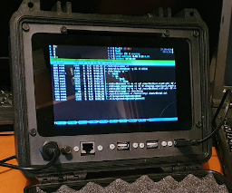

Raspberry Pi
 Some thoughts on Pimoroni's Pico GFX Pack LCD module (Mar 2025)
Some thoughts on Pimoroni's Pico GFX Pack LCD module (Mar 2025)Pimoroni's 'GFX Pack' is an inexpensive, low-power LCD display, with modest resolution. This article describes my experience using and programming it.
Categories: Raspberry Pi, embedded computing, Pico
ARM assembly-language programming for the Raspberry Pi (Feb 2025)A series of simple, progressive examples that demonstrate the essential features of programming in ARM assembly language.
Categories: Raspberry Pi, software development, embedded computing, assembly
Yet another desktop Raspberry Pi media player (Jan 2024)Using a Raspberry Pi as a media player is by no means a new idea. However, using one as a self-contained hifi component is not common, and requires a bit of work.
Categories: Raspberry Pi, hifi
 Making tab-and-slot boxes for electronic prototypes. Or: how I stopped worrying and learned to love the laser (Jan 2024)
Making tab-and-slot boxes for electronic prototypes. Or: how I stopped worrying and learned to love the laser (Jan 2024)Some thoughts on my first experiments with the design of electronics enclosures for laser cutting.
Categories: Raspberry Pi, electronics
Powering a Raspberry Pi from an attached Waveshare USB HAT (Dec 2023)Attaching high-capacity hard disks has always been a bit of a problem for the Raspberry Pi. In this article I describe a simple modification to a Waveshare USB HAT, that allows it to power both the attached drives and also the Pi itself.
Categories: Raspberry Pi, electronics
 Converting push-button events to keyboard events in the Raspberry Pi (Dec 2023)
Converting push-button events to keyboard events in the Raspberry Pi (Dec 2023)The Raspberry Pi has a bunch of GPIO pins we can use to connect push-buttons. But how do we interface push-buttons to an application that expects only keyboard input?
Categories: Raspberry Pi, electronics, Linux
Rolling your own minimal embedded Linux for the Raspberry Pi -- part one: booting to a root shell (Nov 2023)This article is part of a series on building a custom Linux installation for a Raspberry Pi-based appliance. It explains how to make a bootable SD card with Pi firmware, a Linux kernel, and a shell. It's about as minimal as a Linux system can be.
Categories: Raspberry Pi, Linux, embedded computing
Why does my Raspberry Pi project keep displaying the 'lightning bolt' undervoltage indicator? (May 2023)The Raspberry Pi is widely used as part of a more complex electronic project or construction. There's a misconception that such a construction can be powered from the same cheap, nasty USB charger that is suitable to power a Pi on its own. Attempting to do this often leads to undervoltage situations. This article explains why, and what constructors can do about it.
Categories: Raspberry Pi, electronics, embedded computing
The costs and benefits of software pulse-width modulation on the Raspberry Pi (Sep 2022)The Raspberry Pi doesn't offer much in the way of analog outputs, or even hardware controlled PWM. Software-controlled PWM is an alternative in some applications, but it needs to be used carefully, if inefficiencies are to be avoided.
Categories: software development, C, embedded computing, Raspberry Pi
 Using an HD44780 LCD display module with the Raspberry Pi, from the ground up (Sep 2022)
Using an HD44780 LCD display module with the Raspberry Pi, from the ground up (Sep 2022)In this article I explain how to construct, and program in C, an I2C interface to the popular HD44780 LCD display for the Raspberry Pi. Between the article and the accompanying source code, no technical details are concealed: I present the complete hardware design and every line of C code needed to operate it.
Categories: software development, C, embedded computing, Raspberry Pi
Monitoring an INA219 chip in a Raspberry Pi battery-backed power supply (Sep 2022)Many battery-backed power supplies for the Raspberry Pi, and similar systems, use the INA219 current/voltage monitor IC. This device has an I2C interface by which the Pi can determine the battery voltage and current, and estimate the charge level and run-time. This article describes how to write C code that interacts with the INA219.
Categories: software development, C, embedded computing, Raspberry Pi
 Getting reasonably robust proximity measurements from an ultrasonic sensor on the Raspberry Pi (Sep 2022)
Getting reasonably robust proximity measurements from an ultrasonic sensor on the Raspberry Pi (Sep 2022)The HC-SR04 proximity sensor is an inexpensive and widely-used ultrasonic device. Connecting one to an HC-SR04 to a Raspberry Pi is a common educational exercise, but getting accurate, repeatable measurement of distance in a real application is actually quite difficult. This article explains why, and what can be done to improve matters.
Categories: software development, C, embedded computing, Raspberry Pi
Using a shift register to control eight digital outputs with three GPIO lines on the Raspberry Pi (Sep 2022)A simple and inexpensive shift register can be used to increase the digital output provision of a Raspberry Pi or microcontroller. This well-know technique is easy to apply, but has some limitations that require careful consideration.
Categories: software development, C, embedded computing, Raspberry Pi
 Raspberry Pi as a networked storage (NAS) device (Dec 2021)
Raspberry Pi as a networked storage (NAS) device (Dec 2021)How to construct a custom networked storage (NAS) unit based on a Raspberry Pi and two mirrored USB hard drives -- and why you might want to.
Categories: Raspberry Pi, embedded computing
Making a Raspberry Pi bootable SD card from a root filesystem (Dec 2021)You've created a custom Linux installation for the Raspberry Pi. How do you turn that into a bootable SD card image that can be distributed?
Categories: Linux, Raspberry Pi
Rolling your own minimal embedded Linux for the Raspberry Pi (Sep 2021)Introducing a series of articles on building a custom Linux installation for the Raspberry Pi, for appliance applications.
Categories: Raspberry Pi, Linux, embedded computing
Using a Pi Zero and throw-away parts to provide a serial terminal for retrocomputing projects (Jun 2021)Many retrocompting projects are designed to be used with a serial terminal. It's easy to emulate a terminal using a desktop workstation, but more authentic to use a dedicated serial terminal. Real VT52-style terminals are expensive, and difficult to transport because they use CRTs. VGA and small HDMI monitors, however, are dirt cheap, as are USB keyboards. This article is about using a Raspberry Pi Zero with a custom Linux to convert a cheap monitor and keyboard into a serial terminal.
Categories: Raspberry Pi, retrocomputing
Why you can sometimes connect 3.3V and 5V I2C devices (and probably shouldn't) (May 2021)On websites, and in hobbyist kits for Raspberry Pi and Arduino, you'll often see I2C devices connected that have different supply voltages. This is (usually) safe and, in non-critical applications, tends to work. But why?
Categories: Raspberry Pi, electronics, embedded computing, Pico
Using an I2C analog-to-digital for temperature measurement on the Raspberry Pi (Apr 2021)This article describes how to do simple temperature measurement with a Raspberry Pi, and I2C analog-to-digital converter, and a thermistor.
Categories: Raspberry Pi, electronics, embedded computing, C

Peli Protector case as a rugged enclosure for a Raspberry Pi-based field terminal (Jan 2021)Peli cases have a reputation of robustness, and look like a promising way to implement a rugged terminal using a Raspberry Pi.
Categories: Raspberry Pi
 A Raspberry Pi and touchscreen case that anybody can make (Jan 2021)
A Raspberry Pi and touchscreen case that anybody can make (Jan 2021)This is a design for a robust, wooden enclosure for a Raspberry Pi, battery power supply, and touchscreen, that can be made using hand tools.
Categories: Raspberry Pi, embedded computing, electronics
Rolling your own minimal embedded Linux for the Raspberry Pi -- part four: audio (Dec 2020)This article is part of a series on building a customer Linux installation for a Raspberry Pi-based appliance. It explains how to install and set up the minimum software to get audio playback working.
Categories: Raspberry Pi, Linux, embedded computing
Rolling your own minimal embedded Linux for the Raspberry Pi -- part three: services and remote access (Dec 2020)This article is part of a series on building a customer Linux installation for a Raspberry Pi-based appliance. It explains how to set up a system which hitherto only boots to a root shell, to a network-aware installation with service management.
Categories: Raspberry Pi, Linux, embedded computing
Rolling your own minimal embedded Linux for the Raspberry Pi -- part two: early initialization (Dec 2020)This article is part of a series on building a customer Linux installation for a Raspberry Pi-based appliance. It explains how to obtain and install fundamental utilities for use in a system with a read-only filesystem, and no package manager.
Categories: Raspberry Pi, Linux, embedded computing
Rolling your own minimal embedded Linux for the Raspberry Pi -- part five: X (Dec 2020)It's entirely possible to run simple, X-based applications in an appliance-based Linux installation: you just have to dispense with the graphical desktop and all its baggage. This article explains how.
Categories: Raspberry Pi, Linux, embedded computing
Switching a couple of amps with a Raspberry Pi and a relay (Dec 2020)Switching loads of an amp or two with a Raspberry Pi or a microcontroller can be accomplished using a small number of inexpensive components. Suitable circuits are widely published, but the details of operation are not always described.
Categories: Raspberry Pi, electronics, embedded computing
Using an I2C analog-to-digital converter chip with the Raspberry Pi, from the ground up (Nov 2020)This article is about using an I2C analogue-to-digital device for applications like reading sensor values or monitoring backup batteries. With all the technical bits left in.
Categories: Raspberry Pi, electronics, embedded computing, C
 Using the FreeType library to render text nicely onto a Linux framebuffer (Nov 2020)
Using the FreeType library to render text nicely onto a Linux framebuffer (Nov 2020)Writing graphical applications for minimal and embedded Linux systems can present a challenge. One of the problems is producing nicely-rendered text without the facilities that a graphical desktop would provide. This article describes how to use the FreeType library to render text to the Linux framebuffer.
Categories: software development, C, Linux, embedded computing, Raspberry Pi
Using the Raspberry Pi official 7-inch touch-screen in embedded applications (Jul 2020)The official Raspberry Pi 7-inch touchscreen is a useful and well-designed piece of equipment but, if you're using it in a custom (hardware and/or software) build, you'll notice a lack of any relevant technical information. This article tries to supply some of that information.
Categories: Raspberry Pi, electronics, embedded computing
Handling GPIO-connected switches robustly in C on the Raspberry Pi (Jul 2020)It's surprisingly difficult to detect switch actuations in a robust way, dealing with contact bounce and other quirks. This article describes one approach to the problem in C.
Categories: Raspberry Pi, electronics, embedded computing
 Why switching high currents using a MOSFET and a Raspberry Pi is not as straightforward as it looks (Jul 2020)
Why switching high currents using a MOSFET and a Raspberry Pi is not as straightforward as it looks (Jul 2020)Using a single MOSFET transistor for power switching in microcontroller applications is simple and low-cost, but it often doesn't work as well as expected. Either the switched device doesn't run at full capacity, or the MOSFET gets hot. This article explains why.
Categories: Raspberry Pi, electronics, embedded computing
Extracting software from the Raspbian repository, for assembling a custom Linux image for the Raspberry Pi (Jul 2020)Using the official Raspian repository to assist the construction of a custom Linux for embedded applications is quick and convenient, compared to building everything from source. However, this approach has certain hazards.
Categories: Linux, Raspberry Pi, embedded computing
Prototyping a large Raspberry Pi case (Jul 2020)Using high-density vinyl board to construct a practical prototype case without specialist tools or materials
Categories: Raspberry Pi
Raspberry Pi 4 -- is it good news for experimenters and enthusiasts? (Jul 2020)Faster, more of everything, same price -- what's not to like?
Categories: Raspberry Pi